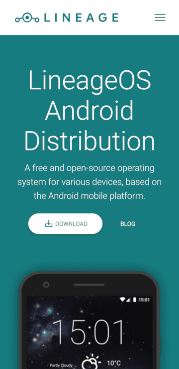
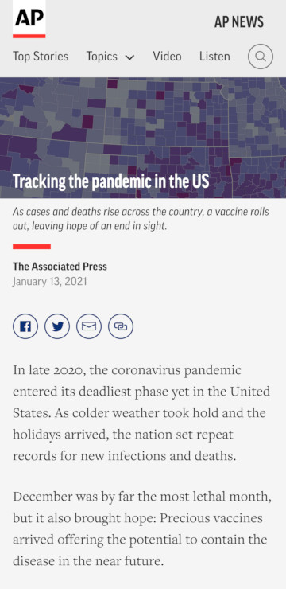

Proximity
The content of each comment is grouped together with its associated information (likes, replies), user information (profile picture, username), and actions (read more, show replies).
Contrast
The majority of the page is composed of two strikingly different colors. The download button stands out from everything else on the page, with an added shadow to drive the point home.
Whitespace
The article paragraphs, as well as the social media links, have a comfortable margin around them to separate both from other elements and the edge of the screen. The various buttons in the header are also visibly buttons, despite lacking any identifying styling, due to the spacing between them.